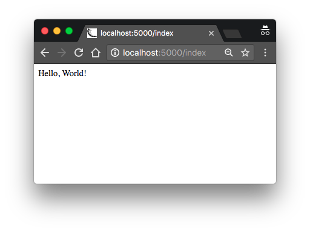

The Flask Mega-Tutorial Part I: Hello, World! (2018)
Posted by
on under(Great news! There is a new version of this tutorial!)
Welcome! You are about to start on a journey to learn how to create web applications with Python and the Flask framework. In this first chapter, you are going to learn how to set up a Flask project. By the end of this chapter you are going to have a simple Flask web application running on your computer!
For your reference, below is a list of the articles in this series.
- Chapter 1: Hello, World! (this article)
- Chapter 2: Templates
- Chapter 3: Web Forms
- Chapter 4: Database
- Chapter 5: User Logins
- Chapter 6: Profile Page and Avatars
- Chapter 7: Error Handling
- Chapter 8: Followers
- Chapter 9: Pagination
- Chapter 10: Email Support
- Chapter 11: Facelift
- Chapter 12: Dates and Times
- Chapter 13: I18n and L10n
- Chapter 14: Ajax
- Chapter 15: A Better Application Structure
- Chapter 16: Full-Text Search
- Chapter 17: Deployment on Linux
- Chapter 18: Deployment on Heroku
- Chapter 19: Deployment on Docker Containers
- Chapter 20: Some JavaScript Magic
- Chapter 21: User Notifications
- Chapter 22: Background Jobs
- Chapter 23: Application Programming Interfaces (APIs)
All the code examples presented in this book are hosted on a GitHub repository. Downloading the code from GitHub can save you a lot of typing, but I strongly recommend that you type the code yourself, at least for the first few chapters. Once you become more familiar with Flask and the example application you can access the code directly from GitHub if the typing becomes too tedious.
At the beginning of each chapter, I'm going to give you three GitHub links that can be useful while you work through the chapter. The Browse link will open the GitHub repository for Microblog at the place where the changes for the chapter you are reading were added, without including any changes introduced in future chapters. The Zip link is a download link for a zip file including the entire application up to and including the changes in the chapter. The Diff link will open a graphical view of all the changes that were made in the chapter you are about to read.
The GitHub links for this chapter are: Browse, Zip, Diff.
Installing Python
If you don't have Python installed on your computer, go ahead and install it now. If your operating system does not provide you with a Python package, you can download an installer from the Python official website. If you are using Microsoft Windows along with WSL or Cygwin, note that you will not be using the Windows native version of Python, but a Unix-friendly version that you need to obtain from Ubuntu (if you are using WSL) or from Cygwin.
To make sure your Python installation is functional, you can open a terminal window and type python3, or if that does not work, just python. Here is what you should expect to see:
$ python3
Python 3.9.6 (default, Jul 10 2021, 16:13:29)
[Clang 12.0.0 (clang-1200.0.32.29)] on darwin
Type "help", "copyright", "credits" or "license" for more information.
>>> _
The Python interpreter is now waiting at an interactive prompt, where you can enter Python statements. In future chapters you will learn what kinds of things this interactive prompt is useful for. But for now, you have confirmed that Python is installed on your system. To exit the interactive prompt, you can type exit() and press Enter. On the Linux and Mac OS X versions of Python you can also exit the interpreter by pressing Ctrl-D. On Windows, the exit shortcut is Ctrl-Z followed by Enter.
Installing Flask
The next step is to install Flask, but before I go into that I want to tell you about the best practices associated with installing Python packages.
In Python, packages such as Flask are available in a public repository, from where anybody can download them and install them. The official Python package repository is called PyPI, which stands for Python Package Index (some people also refer to this repository as the "cheese shop"). Installing a package from PyPI is very simple, because Python comes with a tool called pip that does this work.
To install a package on your machine, you use pip as follows:
$ pip install <package-name>
Interestingly, this method of installing packages will not work in most cases. If your Python interpreter was installed globally for all the users of your computer, chances are your regular user account is not going to have permission to make modifications to it, so the only way to make the command above work is to run it from an administrator account. But even without that complication, consider what happens when you install a package as above. The pip tool is going to download the package from PyPI, and then add it to your Python installation. From that point on, every Python script that you have on your system will have access to this package. Imagine a situation where you have completed a web application using version 1.1 of Flask, which was the most current version of Flask when you started, but now has been superseded by version 2.0. You now want to start a second application, for which you'd like to use the 2.0 version, but if you replace the 1.1 version that you have installed you risk breaking your older application. Do you see the problem? It would be ideal if it was possible to have Flask 1.1 installed and accessible to your old application, while also install Flask 2.0 for your new one.
To address the issue of maintaining different versions of packages for different applications, Python uses the concept of virtual environments. A virtual environment is a complete copy of the Python interpreter. When you install packages in a virtual environment, the system-wide Python interpreter is not affected, only the copy is. So the solution to have complete freedom to install any versions of your packages for each application is to use a different virtual environment for each application. Virtual environments have the added benefit that they are owned by the user who creates them, so they do not require an administrator account.
Let's start by creating a directory where the project will live. I'm going to call this directory microblog, since that is the name of the application:
$ mkdir microblog
$ cd microblog
Support for virtual environments is included in all recent versions of Python, so all you need to do to create one is this:
$ python3 -m venv venv
With this command, I'm asking Python to run the venv package, which creates a virtual environment named venv. The first venv in the command is the name of the Python virtual environment package, and the second is the virtual environment name that I'm going to use for this particular environment. If you find this confusing, you can replace the second venv with a different name that you want to assign to your virtual environment. In general I create my virtual environments with the name venv in the project directory, so whenever I cd into a project I find its corresponding virtual environment.
Note that in some operating systems you may need to use python instead of python3 in the command above. Some installations use python for Python 2.x releases and python3 for the 3.x releases, while others map python to the 3.x releases.
After the command completes, you are going to have a directory named venv where the virtual environment files are stored.
Now you have to tell the system that you want to use this virtual environment, and you do that by activating it. To activate your brand new virtual environment you use the following command:
$ source venv/bin/activate
(venv) $ _
If you are using a Microsoft Windows command prompt window, the activation command is slightly different:
$ venv\Scripts\activate
(venv) $ _
When you activate a virtual environment, the configuration of your terminal session is modified so that the Python interpreter stored inside it is the one that is invoked when you type python. Also, the terminal prompt is modified to include the name of the activated virtual environment. The changes made to your terminal session are all temporary and private to that session, so they will not persist when you close the terminal window. If you work with multiple terminal windows open at the same time, it is perfectly fine to have different virtual environments activated on each one.
Now that you have a virtual environment created and activated, you can finally install Flask in it:
(venv) $ pip install flask
If you want to confirm that your virtual environment now has Flask installed, you can start the Python interpreter and import Flask into it:
>>> import flask
>>> _
If this statement does not give you any errors you can congratulate yourself, as Flask is installed and ready to be used.
Note that the above installation commands does not specify which version of Flask you want to install. The default when no version is specified is to install the latest version available in the package repository. This tutorial can be followed with Flask versions 1 and 2. The above command will install the latest 2.x version. If for any reason you prefer to follow this tutorial on a 1.x release of Flask, you can use the following command to install the latest 1.x version:
(venv) $ pip install "flask<2"
A "Hello, World" Flask Application
If you go to the Flask website, you are welcomed with a very simple example application that has just five lines of code. Instead of repeating that trivial example, I'm going to show you a slightly more elaborate one that will give you a good base structure for writing larger applications.
The application will exist in a package. In Python, a sub-directory that includes a __init__.py file is considered a package, and can be imported. When you import a package, the __init__.py executes and defines what symbols the package exposes to the outside world.
Let's create a package called app, that will host the application. Make sure you are in the microblog directory and then run the following command:
(venv) $ mkdir app
The __init__.py for the app package is going to contain the following code:
app/__init__.py: Flask application instance
from flask import Flask
app = Flask(__name__)
from app import routes
The script above simply creates the application object as an instance of class Flask imported from the flask package. The __name__ variable passed to the Flask class is a Python predefined variable, which is set to the name of the module in which it is used. Flask uses the location of the module passed here as a starting point when it needs to load associated resources such as template files, which I will cover in Chapter 2. For all practical purposes, passing __name__ is almost always going to configure Flask in the correct way. The application then imports the routes module, which doesn't exist yet.
One aspect that may seem confusing at first is that there are two entities named app. The app package is defined by the app directory and the __init__.py script, and is referenced in the from app import routes statement. The app variable is defined as an instance of class Flask in the __init__.py script, which makes it a member of the app package.
Another peculiarity is that the routes module is imported at the bottom and not at the top of the script as it is always done. The bottom import is a workaround to circular imports, a common problem with Flask applications. You are going to see that the routes module needs to import the app variable defined in this script, so putting one of the reciprocal imports at the bottom avoids the error that results from the mutual references between these two files.
So what goes in the routes module? The routes are the different URLs that the application implements. In Flask, handlers for the application routes are written as Python functions, called view functions. View functions are mapped to one or more route URLs so that Flask knows what logic to execute when a client requests a given URL.
Here is the first view function for this application, which you need to write in a new module named app/routes.py:
app/routes.py: Home page route
from app import app
@app.route('/')
@app.route('/index')
def index():
return "Hello, World!"
This view function is actually pretty simple, it just returns a greeting as a string. The two strange @app.route lines above the function are decorators, a unique feature of the Python language. A decorator modifies the function that follows it. A common pattern with decorators is to use them to register functions as callbacks for certain events. In this case, the @app.route decorator creates an association between the URL given as an argument and the function. In this example there are two decorators, which associate the URLs / and /index to this function. This means that when a web browser requests either of these two URLs, Flask is going to invoke this function and pass the return value of it back to the browser as a response. If this does not make complete sense yet, it will in a little bit when you run this application.
To complete the application, you need to have a Python script at the top-level that defines the Flask application instance. Let's call this script microblog.py, and define it as a single line that imports the application instance:
microblog.py: Main application module
from app import app
Remember the two app entities? Here you can see both together in the same sentence. The Flask application instance is called app and is a member of the app package. The from app import app statement imports the app variable that is a member of the app package. If you find this confusing, you can rename either the package or the variable to something else.
Just to make sure that you are doing everything correctly, below you can see a diagram of the project structure so far:
microblog/
venv/
app/
__init__.py
routes.py
microblog.py
Believe it or not, this first version of the application is now complete! Before running it, though, Flask needs to be told how to import it, by setting the FLASK_APP environment variable:
(venv) $ export FLASK_APP=microblog.py
If you are using the Microsoft Windows command prompt, use set instead of export in the command above.
Are you ready to be blown away? You can run your first web application, with the following command:
(venv) $ flask run
* Serving Flask app 'microblog.py' (lazy loading)
* Environment: production
WARNING: This is a development server. Do not use it in a production deployment.
Use a production WSGI server instead.
* Debug mode: off
* Running on http://127.0.0.1:5000/ (Press CTRL+C to quit)
After the server initializes it will wait for client connections. The output from flask run indicates that the server is running on IP address 127.0.0.1, which is always the address of your own computer. This address is so common that is also has a simpler name that you may have seen before: localhost. Network servers listen for connections on a specific port number. Applications deployed on production web servers typically listen on port 443, or sometimes 80 if they do not implement encryption, but access to these ports requireis administration rights. Since this application is running in a development environment, Flask uses the freely available port 5000. Now open up your web browser and enter the following URL in the address field:
http://localhost:5000/
Alternatively you can use this other URL:
http://localhost:5000/index
Do you see the application route mappings in action? The first URL maps to /, while the second maps to /index. Both routes are associated with the only view function in the application, so they produce the same output, which is the string that the function returns. If you enter any other URL you will get an error, since only these two URLs are recognized by the application.

When you are done playing with the server you can just press Ctrl-C to stop it.
Congratulations, you have completed the first big step to become a web developer!
Before I end this chapter, I will do one more thing. Since environment variables aren't remembered across terminal sessions, you may find tedious to always have to set the FLASK_APP environment variable when you open a new terminal window. Starting with version 1.0, Flask allows you to register environment variables that you want to be automatically imported when you run the flask command. To use this option you have to install the python-dotenv package:
(venv) $ pip install python-dotenv
Then you can just write the environment variable name and value in a file named .flaskenv located in the top-level directory of the project:
.flaskenv: Environment variables for flask command
FLASK_APP=microblog.py
Become a Patron!
Hello, and thank you for visiting my blog! If you enjoyed this article, please consider supporting my work on this blog on Patreon!

-
#1 Nitin George Cherian said
Hello Miguel,
Thank you for this nice series of tutorials. After working on this Mega tutorial series, will I be able to implement a blog like yours (blog.miguelgrinberg.com) and deploy it for production as described here https://blog.miguelgrinberg.com/post/about-this-blog?
Thanks,
-Nitin -
#2 Oliver said
Thank you so much for doing this! Looking forward to following along.
-
#3 Miguel Grinberg said
@Nitin: I would think so. There are a lot of similarities between the application in the tutorial and a blog.
-
#4 Luis Herrera said
Amazing Work. I use django a lot but I want to learn flask because it seems more suitable for microservices.
-
#5 Henry Thiel said
Hello Mr. Grinberg;
Your megatutorial and followup book taught me how to use Flask, although as I'm barely above scriptkiddie status, I tend to use the tutorial a little heavily and as a framework for larger projects.
Are there going to be any major differences between this and the book in terms of practices, or is this primarily an update to bring it in line with new releases of Python, Flask, and the various assorted modules and plugins? While fairly unimaginative in my own right I'm pretty good about keeping up to date with those changes (although the vast majority of my work is still so low level the biggest difference between Python 2 and 3 for me are the print statements!), so I"m wondering how much of a benefit I would get from this update.
Thank you for writing this - prior to finding Flask and your tutorial, I was building my own server and framework because I couldn't figure out anything else. Oh gods, the code is ugly...
/Henry J. Thiel
-
#6 Miguel Grinberg said
@Henry: The book and the mega-tutorial have different goals. The book is centered around Flask and a small number of core extensions, and covers those in depth. The mega-tutorial covers a larger range of topics and does not get as technical in the beginning, making it more ideal to beginners.
-
#7 Ben said
Wow!! I cannot believe you are redoing your mega tutorial. I've been referencing back to your older posts for years now. You cannot imagine how helpful they have been for me. Thank you! Thank you!
-
#8 Joe said
Thank you so much for the update! I plan on using this early next year as part of an immersion course for my local meetup group.
-
#9 Matthew Cummings said
Miguel, A few months ago I discovered your original Mega Tutorial and learned a lot from it, working around deprecated libraries and my Anaconda framework were challenging. I was very pleased to hear about this upcoming update and look forward to purchasing both the book and video and continuing my education.
-
#10 Wey Gu said
I learnt a lot from the legacy flask mega tutorial last year and your presentations on YouTube, thanks Miguel.
Great to see the upcoming brand new mega tutorial. -
#11 Lexonight said
nice tutorial, would probably help newbs, like myself, will always be a newb :) if you showed the directory structure in the beginning
-
#12 Miguel Grinberg said
@Lexonight: The GitHub links at the top of the article are intended to be used as a reference. The "Browse" link will send you to a browsable version of the project where you can see the file structure.
-
#13 Komeil said
Miguel,
First I don't know how to put into words how much I appreciate the time and effort you spend on educating python aficionados such as myself on the intricacies of building websites from scratch using Python and Flask. Thank you very much.
Second I have read your original Flask Mega Tutorial and have now purchased the updated version (sorely needed due to the amount of deprecation from the original) and learned a tremendous amount. I plan on creating a web app in the near future and was wondering if you could recommend some more in depth resources on actually deploying the website (other than the ones you already mentioned). My difficulty lies in simply understanding the technically heavy requirements involved when trying to keep up with the maintenance of hosting a server privately. Even heroku, which requires much less maintenance than the other, was a bit of a challenge to follow. What are your thoughts on pythonanywhere.com? would the same principles apply for that as Digital Ocean?
Once again thank you for your time
-Komeil
-
#14 Miguel Grinberg said
@Komeil: Unfortunately all options have some amount of difficulty. Heroku is good in my opinion, because once you complete the initial set up, all you need to do to deploy an update is a git push operation. I haven't used pythonanywhere enough to comment, but as far as I know it has good reputation. The digital ocean/linode route gives you more control, but you'll have to manage the server pretty much yourself. You probably saw the chapter that is dedicated to this type of deployment in the book, if you feel like you can manage that then this is a good solution (this blog is currently hosted on digital ocean, btw).
-
#15 Francis said
Hi Miguel,
Thanks big time for this tutorial. I followed your original tutorial many years ago and it was great but got lost around the tutorial requiring openid authentication.
I am having difficulty wrapping my head around why the run code isn't in microblog.py so that the app runs by just calling the python interpreter, i.e python microblog.py. Why this particular format, please shed some light on what's going on? Thanks a lot.Francis
-
#16 Miguel Grinberg said
@Francis: This is the format that is recommended for current releases of Flask. You can use the old style of starting the app if you want, that still works, though there is only some issues that you may experience if you use it with the Flask reloader.
-
#17 Brandon said
Thank you so much for all your time. I'm yet another coder who learned flask from your work years ago, and have used it extensively ever since. I'd like to request, which you can totally ignore if you want, that you give context on why certain things changed. I'm thinking the switch from "views" to "routes" for example. I'm sure it won't always make sense to, but that bit of context would be appreciated where it makes sense!
-
#18 Miguel Grinberg said
@Brandon: There isn't really a reason. The application was completely rewritten, so some things got done in different ways. There is really no hidden purpose in the naming differences between the modules in the old and new versions.
-
#19 ikukuvision said
Hi Miguel & to all others on this forum. I am new to coding and have been making my way through as steadily as i can, as i am older with kids, trying to go for something i really want and change my life.
I won't take up too much of your time. I only have 2 questions:
- Before i purchase the book, can i just inquire if the topic chapters laid out above are all contained in the book?
- I have followed the code and concepts in Chapter 1, Hello World to the letter, but i keep getting this error when i try to run the app. When i enter (venv) $ export FLASK_APP=microblog.py , followed by (venv) $ flask run, i get this error : Error: The file/path provided (../ meetup.py) does not appear to exist. Please verify the path is correct. If app is not on PYTHONPATH, ensure the extension is .py
I have searched high and low for a solution for this, but keep getting conflicting answers that don't work. Did anyone else encounter this and if yes, how did you solve it? Any help will be massively appreciated. Thank you
-
#20 Miguel Grinberg said
@ikukuvision: The ebook comes with the 23 chapters, exactly as laid out here. The error that you are getting indicates that your application is set to "../meetup.py". Does this have any significance to you? Make sure the value of the FLASK_APP variable is "microblog.py", it seems you are not setting the value of this variable correctly. Note that when I show commands that you need to type in a command prompt, the "(venv) $" is the command prompt itself, you need to only type what comes after that. So for example, you would type "export FLASK_APP=microblog.py". Also keep in mind that on Windows the command is different, there you use "set FLASK_APP=microblog.py".
-
#21 IkukuVision said
Thank you kindly for your reply Miguel. I was able to resolve by following this thread: https://stackoverflow.com/questions/37826016/error-while-running-minimal-flask-application
So to get the application to run, i used $env:FLASK_APP = "meet_up.py" and then flask run
meet_up.py is what i named my app, not microblog...apologies for any confusion caused by the mistype.Apparently, this error is quite common, but difficult to resolve. It took a two hour search to find a solution
Error: Could not locate Flask application. You did not provide the FLASK_AP
P environment variable.I hope this makes some sense. Just writing this in case anyone is experiencing anything similar. Thanks again
-
#22 Miguel Grinberg said
@IkukuVision: looks like you are on Windows, and are using the PowerShell instead of the Command Prompt. That is fine, but PowerShell uses a completely different structure for commands, so yes, you will need to find out the correct way to issue the commands in PowerShell, as my examples will always be using Command Prompt.
-
#23 Bill Cheswick said
This appears to be a fine, gentle start for someone diving into flask. Alas, there appears to be an immediate problem on my FreeBSD 11.1 system.
I have installed Python3 and am using the venv...thank you for the explanation. But flask calls click, and it seems to have some Unicode issue with Python 3. The click web page suggests using Python 2.7. At this stage, I really just want to get on with my new web pages, not try to debug some esoteric incompatibility in the underlying software. Should I drop back to 2.7? Perhaps install a different click?
-
#24 Miguel Grinberg said
@Bill: I don't have a FreeBSD system at hand to test. Would be willing to write a Stack Overflow question with a full description of the problem and the complete error message including the stack trace?
-
#25 Brett Vanderwerff said
Thank you for making these. Is it okay to still do the legacy tutorial in 2017 or will I be doing myself a disservice?